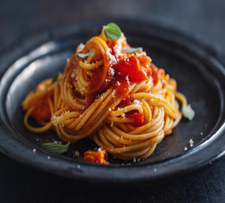
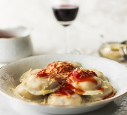
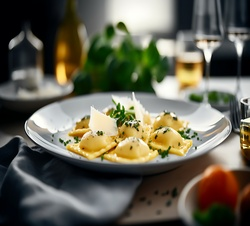
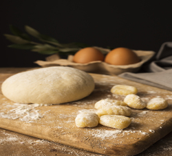

Pastas
Espaguetis
Los espaguetis son una de las pastas más icónicas y reconocibles en la cocina italiana. Consisten en tiras largas y delgadas de pasta que se cuecen en agua hirviendo. Su versatilidad los hace ideales para una gran variedad de salsas, desde una sencilla salsa de tomate hasta una más compleja carbonara. Los espaguetis a la boloñesa, con una salsa de carne y tomate, son un clásico que nunca pasa de moda. Además, su textura y forma los hacen perfectos para absorber y retener los sabores de cualquier salsa.
Fettuccine
El fettuccine es una pasta plana y ancha que se parece a las cintas. Tradicionalmente, se sirve con salsas ricas y cremosas, siendo la más famosa la salsa Alfredo, hecha con mantequilla, nata y queso parmesano. Este tipo de pasta es común en la región italiana de Roma, donde se puede encontrar en numerosos platos típicos. La textura suave y la superficie ancha del fettuccine permiten que se mezcle bien con ingredientes más pesados y densos, haciendo de cada bocado una experiencia deliciosa y cremosa.
Ravioli
Los ravioli son pequeñas almohadillas de pasta rellenas que se cuecen en agua o caldo. Pueden estar rellenos de una amplia variedad de ingredientes, como carne, queso, espinacas o setas. Los ravioli a menudo se sirven con salsas ligeras para no opacar el sabor del relleno, como la mantequilla y salvia o una simple salsa de tomate. Este tipo de pasta tiene sus raíces en la cocina casera italiana, donde las familias preparaban los rellenos y la masa desde cero, creando un plato lleno de sabor y tradición.
Ñoquis
Los ñoquis, conocidos como gnocchi en italiano, son pequeñas bolas de masa hechas tradicionalmente de patata, harina y huevo. Aunque se consideran un tipo de pasta, tienen una textura y sabor únicos que los distinguen. Su preparación suele ser simple: se cuecen en agua hirviendo hasta que flotan, lo que indica que están listos. Los ñoquis se sirven con una variedad de salsas, siendo la más popular la salsa de tomate con albahaca, o simplemente con mantequilla y salvia. Su consistencia suave y esponjosa los convierte en un plato reconfortante y delicioso.